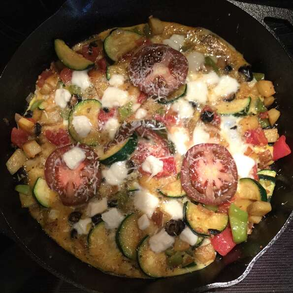

Frittata

Description
This vegetable frittata with potatoes is an easy and filling dish that goes well with cooked greens or a tossed salad and some sprouted grain bread. Almost any vegetables can go into the mix — just make sure they're all chopped before beginning, and start with the ones with the longest cooking time.
Ingredients
- 1 teaspoon olive oil
- ½ cup chopped onion
- 1 clove garlic, minced
- ½ cup diced green bell pepper
- 1 zucchini, halved lengthwise and cut in 1/4 inch slices
- 2 cups cooked and diced potatoes
- 1 cup chopped fresh tomato
- 2 tablespoons black olives
- 4 eggs
- salt and pepper to taste
- ¼ teaspoon dried oregano
- 1 pinch cayenne pepper
- ½ small tomato, sliced
- ¼ cup shredded mozzarella cheese
- ¼ cup grated Parmesan cheese
Steps
- Set an oven rack about 6 inches from the heat source and preheat the oven's broiler.
- Heat oil in a frying pan with an ovenproof handle. Sauté onion, garlic, and bell pepper over low heat until vegetables are tender but not browned. Add zucchini and continue cooking, stirring occasionally, until tender but still crisp. Add potatoes and continue cooking, stirring frequently, until potatoes are heated through and starting to stick to the pan. Stir in chopped tomatoes and black olives and cook just until tomatoes begin giving up their juice.
- Whisk eggs together with salt, pepper, oregano, and cayenne; pour over cooked vegetables.
- Arrange tomato slices over the top and sprinkle mozzarella and Parmesan over tomato slices. Cook gently over low heat until eggs are almost set (firm around the edges and a bit runny in the middle).
- Place the pan under the preheated broiler for 1 to 2 minutes, or until eggs are fully set and cheese is melted and slightly browned. Cut into wedges and serve.